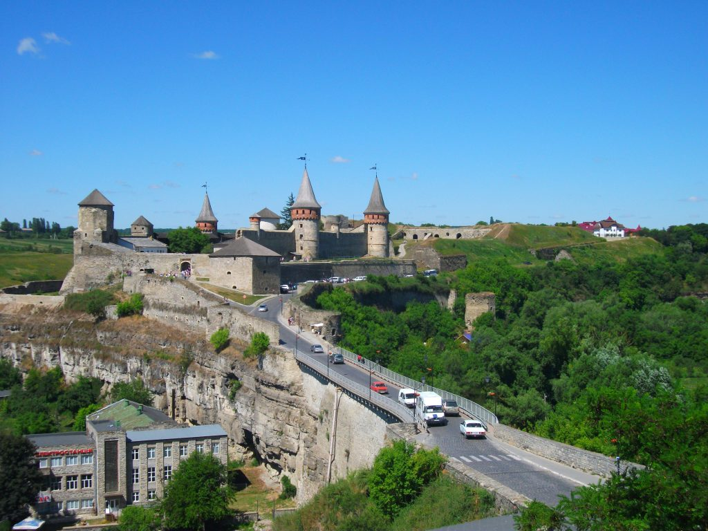
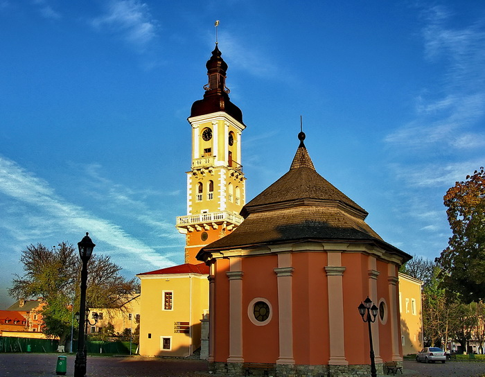
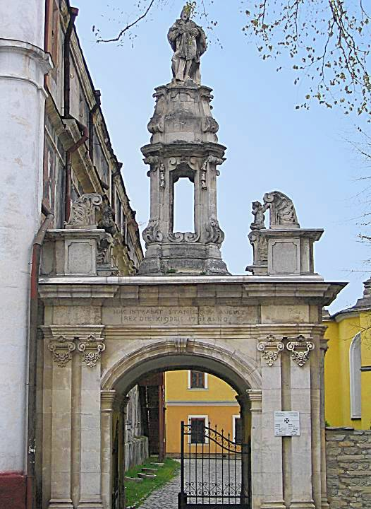
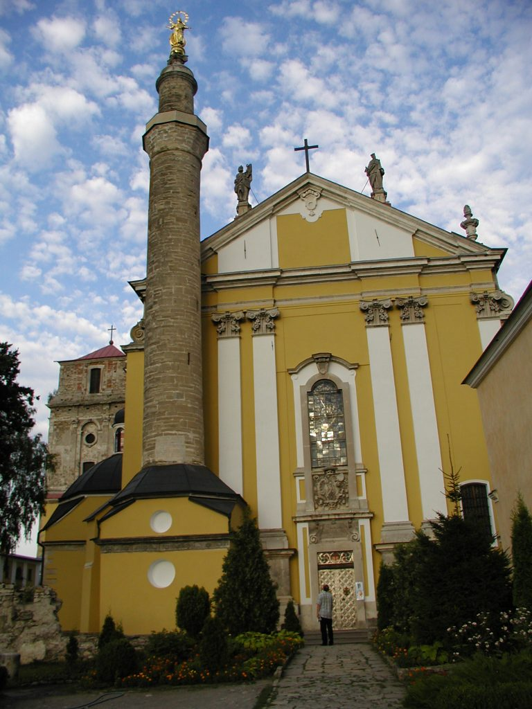
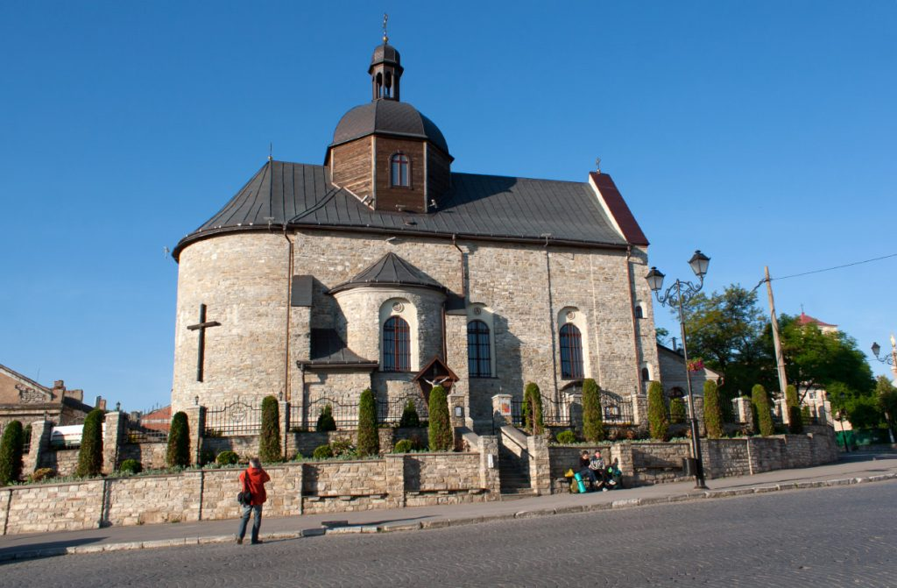

Замковий міст Інша поширена назва, Турецький міст, пов’язана з серйозною реконструкцією моста, проведеною під час володіння містом турками у XVII столітті. Після цього відбувалось ще кілька реконструкцій, які внесли свої зміни в побудову моста. Сьогодні Замковий міст – це суцільний кам’яний мур, що мало нагадує міст і скоріше сприймається як гребля. Основою є вапнякова скеля у вигляді вузького гребеня, який у середній частині знижується. Тут у товщі скелі пробито канал для пропуску води, внаслідок цього утворився водоспад Круча. З обох боків мосту є кам’яні сходи в долину Смотрича, споруджені ще в XIX столітті. Через міст проходить Замкова вулиця, яка виводить до Вірменського ринку, а трохи далі – до Вірменської криниці. Ці назви пов’язані з тим, що ще з XI століття в Кам’янець переселялись вірмени, які активно розвивали у місті торгівлю та ремесла. Поруч з Вірменською криницею розташована найстаріша в Україні ратуша, або Будинок польського магістрату (XIV–XVI ст.). Кам’янець, як важливий торговий центр на шляху між Сходом і Західною Європою, одержав Магдебурзьке право у 1432 році

Ратуша та Вірменська криниця Ратуша складається з двох частин – двоповерхової споруди (яка і є будинком ради) та восьмиярусної вежі-дзвіниці. Колись вони стояли окремо на відстані 3 метрів, але після пожежі 1616 року їх об’єднали в єдиний ансамбль. У тому ж XVII столітті в пивницях ратуші містилися камери для тортур інквізиторського суду. А біля стін протягом віків чинилися розправи над тими, хто боровся за визволення краю. Саме тут тричі жорстоко карали ватажка селянських повстань на Поділлі Устима Кармелюка. Кам’янець-Подільський – перлина Поділля : https://vidviday.ua/blog/kamianets-podilskyi/ Кам'янець-Подільський — старовинне руське місто-фортеця на перетині торгових шляхів. Через місто в глибокому скельному каньйоні протікає річка Смотрич, русло якої утворює петлю з вузьким перешийком. На території півострова, утвореного каньйоном, розташоване Старе місто, а підходи до перешийку захищені Старим замком. Кам'янець-Подільський входив до складу Київської Русі і Великого Князівства Литовського, в середні віки був великим ремісничим і торговим пунктом, а також одним з центрів вірменської діаспори на Україні. У 1672 році захоплений і зруйнований Османською імперією; в 1793 році, після другого поділу Речі Посполитої, разом з усією правобережною Україною відійшов до Російської імперії. У Старому місті частково збереглася забудова, яка відображає різні культурні періоди в історії Кам'янцяРатуша складається з двох частин – двоповерхової споруди (яка і є будинком ради) та восьмиярусної вежі-дзвіниці. Колись вони стояли окремо на відстані 3 метрів, але після пожежі 1616 року їх об’єднали в єдиний ансамбль. У тому ж XVII столітті в пивницях ратуші містилися камери для тортур інквізиторського суду. А біля стін протягом віків чинилися розправи над тими, хто боровся за визволення краю. Саме тут тричі жорстоко карали ватажка селянських повстань на Поділлі Устима Кармелюка. Ратуша Ратуша У наш час ансамбль ратуші повністю реконструйовано, в ньому розміщено музейні експозиції. Окрасою вежі ратуші є годинник, встановлений у XVII столітті, що складав з двох дзвонів, відлитих з міді та срібла. Нині один з них знаходиться в історичному музеї, а другий і досі щогодини відбиває час.
Триумфальная аркаЛіворуч від ратуші знаходиться вихід на вулицю Татарську, на якій розташована Тріумфальна арка. Вона збудована на пам’ять про останній візит до Кам’янця останнього польського короля — Станіслава Августа Понятовського. Але не це зробило її відомою. За прикметою, проходячи під аркою, варто думати про сокровенне бажання і воно збудеться. Радимо обов’язково скористатись такою нагодою! Прохід через арку виводить на подвір’я Кафедрального Петропавлівського костелу – мабуть, найдивнішого серед усіх храмів Старого міста. Це єдиний в Україні християнський храм, у композицію якого включено характерний елемент мусульманської архітектури – мінарет, увінчаний… скульптурою Богородиці. Архітектурний ансамбль храму включає костел, дзвіницю, тріумфальну арку і мінарет. Дата заснування костелу достеменно не відома. Відомо, що Кам’янець-Подільське єпископство заснував у місті папа Григорій XI у 1375 році. Імовірно, тоді ж був заснований і перший кафедральний костел, який був дерев’яним. У 1428–1430 роках побудовано корпус первинного кафедрального костьолу. Ймовірно, власне кам’яний собор було збудовано за сприяння єпископа Якуба Бучацького в 1502–1517 роках.
Кафедральний костел святих Апостолів Петра і ПавлаЗа часів владарювання Османської імперії (1672-1699 рр.) кафедральний костел був перетворений на мусульманську мечеть — католицьку сакральну атрибутику з храму прибрано, ренесансну каплицю забито камінням і перетворено на підмурки мінарету висотою 36,5 метрів. Після повернення Кам’янця під владу Речі Посполитої костел відремонтували, але мінарет залишали на місці. Згодом єпископ Миколай Дембовський сприяв встановленню на мінареті статуї Божої Матері заввишки 3,5 метри, яка стоїть на земній кулі та півмісяці і благословляє місто та край. На мечеть у XVII столітті було перетворено й інший відомий храм міста – церкву Пресвятої Трійці. Після встановлення польської влади храм віддано греко-католицькій громаді, а в 1722 єпископ Атанасій Шептицький передав храм монахам ордену Святого Василія, які заснували при ньому монастир. Орден діяв до 1795 року, коли Поділля відійшло Російській імперії, а храм пересвятили у православ’я. Та найважчим виявилось XX століття – у 1935 році храм було розібрано, а відновлення почалось лише в 1995 році. Повністю відновлений храм та монастир було відкрито у 2010 році, і зараз відтворена споруда вражає своєю могутністю та духовною силою.
Храм Пресвятої Трійці василіянського монастиряТрошки віддалік від храму знаходиться ще один відомий міст через Смотрич – Новопланівський, який спочатку називався просто Новий. Його проект розробив губернський архітектор Олександр Песке, а побудова тривала 10 років. Відкрили міст у січні 1874 року. Під час Другої світової війни міст було висаджено в повітря при відступі радянських військ, а відновлено лише в 1949 році. У 2006 році закінчилась реконструкція мосту і нині він має висоту 38 метрів та довжину 136 метрів. Паралельно з мостом проходить зіплайн через усю долину річки, що є популярною розвагою для любителів екстриму.